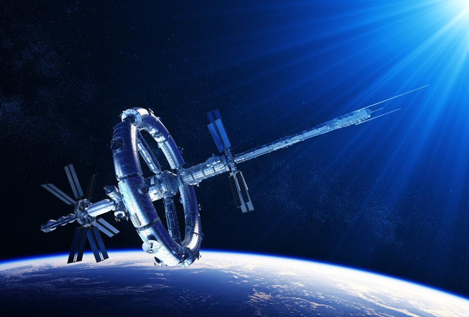

I passed by a bunch of really cool stuff during the early days of my journey. Unfortunately, I hadn't thought of creating a blog at the time, so I didn't take as many pictures as I should have.
I STILL can't believe that I missed the opportunity to take a picture of my favorite satellite! I'm especially angry because I'm completely blanking on the name of the satellite at the moment.
I did manage to find an old picture I had saved of it, but I promise it looks much more impressive in person.
I actually got to touch the satellite! I will always remember Jan 10, 2022, 12 PM PST to be the time when I got to touch my favorite satellite.
I also took a slight detour to check out Orbital Weapons' Desolator cannon. It truly is beautiful up close! I managed to take a picture this time, I hope all of you are able to appreciate its beauty!

Check out this bad boy!
That's all the pictures I wanted to share so far! Catch all of you later!
With affection,
Jory Saltman